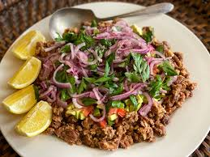
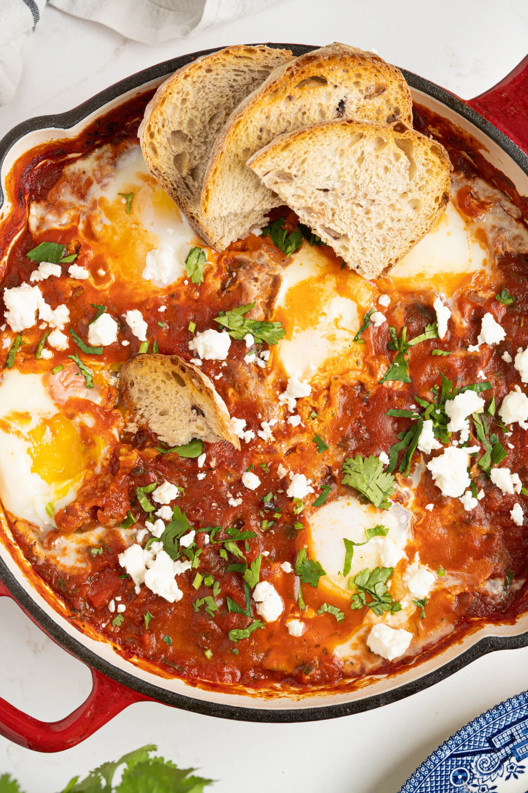
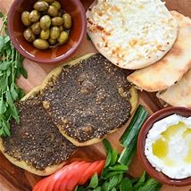

#1 Ful Medames
Ingredients:
2 cups dried fava beans
4 cloves garlic, minced
1/4 cup olive oil
Juice of 2 lemons
Salt to taste
1/4 cup chopped parsley
Flatbread and pickles for serving
4 cloves garlic, minced
1/4 cup olive oil
Juice of 2 lemons
Salt to taste
1/4 cup chopped parsley
Flatbread and pickles for serving
#2. Shakshuka:
Ingredients:
1 large onion, sliced
1 red bell pepper, sliced
4 cloves of garlic, minced
1 teaspoon cumin
1 teaspoon paprika
1/8 teaspoon cayenne pepper
1 can (28 oz) whole peeled tomatoes
Salt to taste
6 large eggs
Fresh parsley for garnish
Warm bread for serving
#3 Manakish

Ingredients:
1 pound pizza dough
1/4 cup olive oil
1/4 cup za'atar